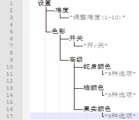

版本历史
文档最后编辑于2018/9/17Beta2.0.2 2018/9/17
- 加入 游戏中的按键提示现在会根据朝向和状态而高亮或改变了。
Beta2.0.1 2018/9/15
- 修复 包含动态链接库至程序中，兼容性更强。
Beta2.0.0 2018/8/10
- 重写所有代码
- 加入 新的界面布局
- 更正 所有网页链接都支持Win10春季创意者更新后版本
- 主要特性(总结一下:D) 由DevC++改用VSC++编写,减小程序体积
文件完整性检查与修复
文件可以进行存储(包含:设置,统计,音频)
团队徽标,动画
更多的菜单
自定义图形及菜单(设置-图像，108种自定义图形)
附加游戏模式(设置-难度)
声音,自定义音频库及菜单(设置-声音,测试版,可能会遇到问题)
动画开关(设置-图像)
帮助及开关(设置-帮助)
数据清除菜单,用于还原设置和统计(设置-清除数据)
统计系统及菜单(信息-统计)
排行榜系统及菜单(信息-排行榜)
软件及团队信息(信息-关于贪吃蛇)
游戏暂停时的菜单
游戏状态
出错时的对话框
游戏时提示
贪吃蛇状态
贪吃蛇心情
玩家信息存储
修改响应方式，使控制贪吃蛇不用长按
游戏时窗口被修改为扁形，适应更小屏幕
提升动画效率
新的界面布局
允许自定义游戏中所有图形形状(共108种)
三种新的颜色
三种更具挑战性的模式(随机石柱,反转果实,变速果实)
设置、统计、音频的存储与检测
音频及自定义(测试版,可能会遇到问题,请等待后续修复或将问题反馈给我们)
帮助
对颜色、动画、声音、帮助都有开关控制
统计及查看
更好的动画
更好的操作响应
允许储存玩家信息
允许自定义音频
游戏暂停时有菜单了
Beta1.4.1 "多彩更新" 2018/6/2
- 更正 改正了语言错误
- bug修复 最新系统下"长按U打开更新日志"无法使用的问题
Beta1.4 "多彩更新" 2018/6/2
- 更正 提升了开头动画的流畅度
- 加入 彩色显示（9种：随机、灰、红、绿、蓝、黄、紫、青、白、亮白）
- 特性 现在可以在设置中选择蛇身，墙，果实颜色了（9种：随机、灰、红、绿、蓝、黄、紫、青、白、亮白）
重新排版了“任务清单”
改进了暂停中离开时的动画效果
改进了多数选项的绘制方式，提升流畅度
重新规划了设置
改进页面布局
加入了图标
加入了色彩开关和色彩高级选项
加入了工作室网址
现在可以在设置中关闭颜色开关了
现在蛇的速度会根据吃掉的果子数量而改变了
现在的设置索引：

Beta1.3 2018/5/29
- 更正 失败时内容拼写错误
- 加入 暂停返回主菜单时的动画
- 移除 自杀按钮及提示
- bug修复 游戏时同时按住向后方向和转弯方向可能导致死亡
重新排版了“任务清单”
改进了暂停时的动画效果
加入了图标
加入了色彩开关和色彩高级选项
加入了工作室网址
从失败界面返回时标题不会改变
退出时文字未能完全覆盖
减少了鼠标指针出现可能性
Beta1.2 2018/5/28
- 加入 加入前往更新日志的方式
- bug修复 修复暂停恢复后分数显示异常的错误
更多动画
自杀按钮[只是为了掩盖一个bug (｡･ω･｡)]
“任务清单”
Beta1.1 2018/5/27
- 加入 加入胜利条件
更多动画
版本信息
Beta1.0 2018/5/26
- 加入 游戏主体